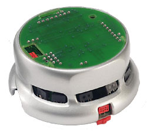
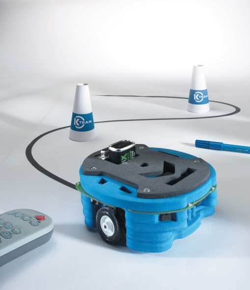
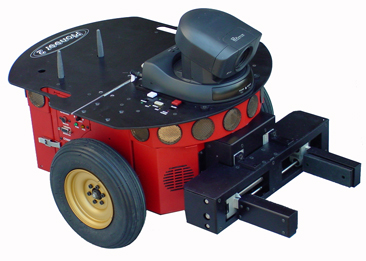
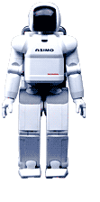
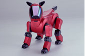

|
|||||||
| [ Home ] | [ Software ] | [ Curriculum ] | [ Hardware ] | [ Community ] | [ News ] | [ Publications ] | [ Search ] |
|
Robot MorphologyWe are concerned here with mobile robots. These robots are capable of moving about in their environment as well as perceiving the environment with their sensors. Mobile robots come in all shapes and sizes. The examples below show the diversity of possible robot morphologies

The Khepera series of robots are small robots (about 2.5 inches in diameter), weighing about 80 grams. The basic robot comes equipped with two drive motors and eight IR sensors that can be used for sensing distance to obstacles, and also sensing light intensities.

Photo: Courtesy of K-Team.com
The Hemisson robots are also part of the K-Team family. These robots are about 5 inches in diameter, weighing about 1lb. The basic robot comes equipped with two drive motors, eight light sensors, 6 IR sensors, and two line detection sensors. There is also a programmable buzzer, 4 LEDs, and 6 switches. Several extension modules that can be added make this an ideal platform for educational robotics.

The Pioneer 2-DXE, shown above, weighs 50-60 lbs. The basic robot comes equipped with two motors, one controlling each wheel. The robots have two groups of 8 sonar sensors, with one group at the front and another at the back. A pan-tilt-zoom camera and a gripper are shown in the configuration above. A back bumper is also available. For more information on Pioneers, see www.activrobots.com/.

This is a photo of the Honda ASIMO, a 1.6 meter tall humanoid robot with a top walking speed of 2 kilometers per hour. The ASIMO sensors include gyroscopes, g-force sensors, force sensors at the ankles, and cameras. For more information on ASIMO, see world.honda.com/robot/.

The Sony AIBO is a four-legged robot built to look like a small dog. It has touch sensors on the head, chin, and back, a camera near its nose, stereo microphones in the ears, and a speaker near the mouth. For more information on the AIBO, see www.sony.net/Products/aibo/.
Genghis is a six-legged robot developed at the MIT Artificial Intelligence Laboratory by Rodney Brooks. The robot is 35 cm long, has a leg span of 25 cm, and weighs 1 kilogram. Each leg has 2 servo motors for movement; the robot is able to get some rough force measurement from these motors in order to figure out if the leg has hit anything. There are two whiskers in front, 2 inclinometers (pitch and roll), and 6 forward facing pyro-electric sensors. For more information on Genghis, see www.ai.mit.edu/projects/genghis/genghis.html.
While many robots operate independently of their human users, some robots are built to have their users work very closely with them, even as a passenger. Robotic wheelchairs are being developed to assist people move through the world more easily and safely. Wheelesley, shown above, is an example of a robotic wheelchair. It uses sonar, infrared, bump and vision sensors to navigate through the world. The robot has two drive wheels in the center of the wheelchair with casters in the front and back for balance support. Despite these vastly different morphologies, it is possible to abstract, based on functional characteristics, a generic robot morphology that can be used to write ubiquitous robot control programs. Let us first concentrate on movement, specifically wheeled movement. Regardless of the mechanisms present for moving the robot in space, the desired motion of a mobile robot could be functionally described as translation through space. For example, think about a class of robots that are capable of moving forward or backward in a straight line, or turning a certain amount clockwise or counterclockwise. If these were the only kinds of motions desired from a mobile robot, it would be easy to write 'drivers' for each specific robot that would command the motors to carry out the actions that are functionally described as going forward, backward, or turning. The drivers would control the specific motors to operate in ways that result in the robot moving in these ways. Pyro thrives on these kinds of abstractions. The advantage of this approach is that we end up with universal programs for robot control. Of course, the obvious disadvantage is that we may not be making use of all the possible types of motions a robot may be capable of executing (for example, turning left while going backward, or the motions required for a biped robot to climb stairs). However, for a diverse set of robot experiments, these abstractions provide a rich set of functionalities that are common to most robot platforms and thus programs written to control one robot could also be used to control other robots, regardless of the size or physical characteristics of the robot. The basic robot morphology assumed for any robot in Pyro is a mobile robot that is capable of moving in a straight line and spinning. At the very least, it is assumed to have sensors that provide range/distance information with which it can be made to navigate its environment. In most cases, these robots will also have some vision capabilities through the use of a camera, which also might be able to move. We will use Khepera and Pioneer robots for most of our experiments. In what follows, we will present the effector and sensor abstractions that will enable us to write programs to control these robots. In addition to the actual robots, we will also make extensive use of robot simulators. These will help in understanding and debugging our experiments.
Exercises1. Find at least three other types of robot morphologies on the web. Briefly describe each robot in terms of its sensors and movement, as was done for the robots in this section. 2. Compare the robot morphologies of C-3PO and R2-D2 from Star Wars. How would controlling these two robots be different from each other? What advantages would each have over the other? What disadvantages? Next: Pyro Effectors Up: PyroModuleIntroduction
|
| [ Home ] | [ Software ] | [ Curriculum ] | [ Hardware ] | [ Community ] | [ News ] | [ Publications ] | [ Search ] |
 View Wiki Source | Edit Wiki Source | Mail Webmaster
View Wiki Source | Edit Wiki Source | Mail Webmaster | |||||||